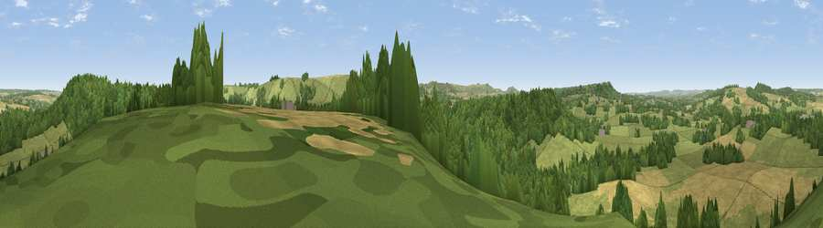

Viewpoint near Donhead St Andrew
#20981 in England · top 28% of its area beats it · near Donhead St Andrew · path 175 mWhere it is
The exact computed spot (ST 93375 25975). Click the marker for map links.
Public access: the nearest public right of way is about 175 m away — the final stretch may cross private land. Computed from Natural England's CRoW access layer and OpenStreetMap rights of way — not the legal definitive map. Always verify locally.
The view, rendered

A 360° render of this exact spot computed from the terrain model, tree cover and land cover — summer colours, afternoon light, calibrated against photographs of famous viewpoints. Real trees, hedges and buildings will differ in detail.
The panorama
Grey silhouette: terrain skyline in each direction (720 bearings, Earth curvature and refraction included). Dashed green: skyline with trees (+15 m) and buildings (+8 m) as obstacles. Blue strip: how far the ground is visible on each bearing.
Where the view opens
Wedge length = distance to the farthest visible ground on that bearing (vegetation-aware). Rings at 10, 25 and 50 km.
What fills the view
47% grassland · 34% woodland · 18% cropland ·
Angular shares of the visible panorama (visual magnitude), not map area. Landscape diversity 0.47 (0–1 Shannon).
Key numbers
More beautiful places nearby
The staircase of upgrades: each row has a higher view potential than everything closer. Driving times are estimates from straight-line distance, calibrated against real road routing — check an actual route before setting out.
| Place | Direction | Drive | Score |
|---|---|---|---|
| Ansty Down | SE · 2 km | ~5 min | 61.6 |
| Viewpoint near Fonthill Gifford | NNW · 5 km | ~10 min | 64.2 |
| Viewpoint near Berwick St John | SSE · 5 km | ~11 min | 65.5 |
| Monk's Down | S · 5 km | ~11 min | 74.4 |
| Viewpoint near Berwick St John | S · 5 km | ~12 min | 78.2 |
| Viewpoint near Kimmeridge | S · 44 km | ~64 min | 82.9 |
| Viewpoint near Kimmeridge | S · 44 km | ~64 min | 84.1 |
| Whiteway Hill | S · 45 km | ~66 min | 85.0 |
51.03310, -2.09585 · source: screening · position refined by local search. Computed location — check access rights before visiting.